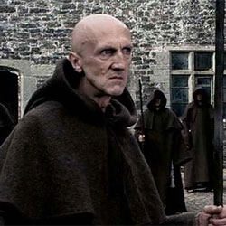

| Home | The Doctors | The Companions | The Villains |
|
|||
Father AngeloFather Angelo is the leader of the monks who capture the Torchwood Estate and give refuge to a werewolf, as seen in "Tooth and Claw" (2006). He seeks to take the throne from Queen Victoria, but she shoots and kills him although no body is seen. |